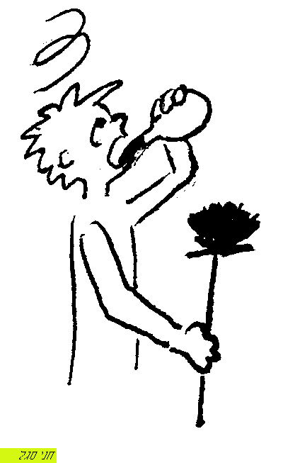

עשבים - עשבי-מאכל, פרחים וקוצים
אגמון
אזוב
אטָד
- = "ודרדר" תרגם אונקלוס "אטדין" [שבי"ל]
בָאְשָה
- = מין חוח, ראב"ע איוב לא40 [שבי"ל]
ברקָן
- [רק בריבוי "ברקנים"] [שבי"ל]
- [באה רק בספר שופטים] / מוטי אהרוני (MOTI_AHARONI @ WALLA.CO.IL)
דרדַר
- = קוץ ואטד [שבי"ל]
- התפריט של אדם וחוה לפני החטא ואחרי החטא / אראל
זרזִיף
- = תרגומו "עשבא דארעא" [שבי"ל]
חבצלֶת
- = ורד בלשון משנה [שבי"ל]
חדֶק
- = מין קוץ [שבי"ל]
חוֹח
- = מין קוץ [שבי"ל]
- 
- החוח אשר בלבנון / אראל
- חוח עלה ביד שיכור / אראל
{kind=link}
חטה
חציר
חרול
- = מין חוח וקוץ [שבי"ל]
חשַש
- = עשב יבש; נרדף ל"קש" / סיגל
- [באה רק בספר ישעיהו] / מוטי אהרוני (MOTI_AHARONI @ WALLA.CO.IL) -> האתר
{kind=link}
ירק עשב
כֻסמת
לענה
- = עשב מר [שבי"ל]
מלוּח
מֹץ
- = קש דק אשר תדפנו הרוח [שבי"ל]
- דמות הצדיק / יהודה איזנברג -> קול ישראל
- כי יודע ה' דרך צדיקים / יהושוע רוזנברג -> קול ישראל
מתבן
נעצוץ
- = קוץ ודרדר [שבי"ל]
- [באה רק בספר ישעיהו] / מוטי אהרוני (MOTI_AHARONI @ WALLA.CO.IL) -> האתר
סוּף
סִיר2
סִלּון
- = קוץ [שבי"ל]
סרפָד
- = מין קוץ [שבי"ל]
עשֶׂב
- = ירק [שבי"ל]
- בפרוח רשעים כמו עשב / אראל
- חלוקת עולם הצומח בתורה / אראל
עשב השדה
פֶרַח
- = ציץ [שבי"ל]


- יש ה 24 / נופר דסקל
{kind=link}
פשתה
צינים
צנינים
קוֹץ
קימוש
- = מין קוצים [שבי"ל]
קיקיון
- = מין עשב שעליו גדולים ורחבים [שבי"ל]
- [באה רק בספר יונה] / מוטי אהרוני (MOTI_AHARONI @ WALLA.CO.IL) -> האתר
קמשונים
רֹאש2
שושן
- = ורד [שבי"ל]
שיבולים
שיבולת2
{kind=link}
שַיִת
- = מין קוצים [שבי"ל]
- [באה רק בספר ישעיהו] / מוטי אהרוני (MOTI_AHARONI @ WALLA.CO.IL) -> האתר
{kind=link}